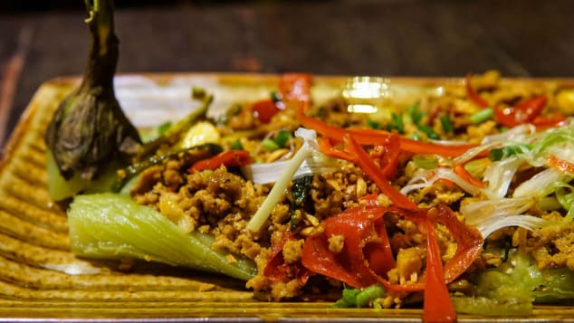

Famous Food

Curry Sach Moan
It is a famous food with curry(soup) with chicken and other vegies on it.

Nom Banh Chok
It is a famous food with khmer soup and other vegies on it.

Kho Trei Svay Kjey
It is a famous food with fish , soup , meat and green mango in it.

Pra Hok Ktis
It is a famous food with Pra hok(meat) in it.

Plea Sach Ko
It is a famous food with sach ko(meat from the cow), a bit of chillies and other food in it.
Recommend Food
| NAME | THUMBNAIL | DESCRIPTION | CATEGORY |
|---|---|---|---|
| Food1 |

|
It is the 1st famous food. | Soup |
| Food2 |
|
It is the 2nd famous food. Nom Ban Chok | |
| Food3 |

|
It is the 3rd famous food. Bay Sach Jruk | |
| Food4 |
|
It is the 4th famous food. Curry Sach Moan | |
| Food5 |

|
It is the 5th famous food. Mikalo | Fried |
| Food6 |
|
It is the 6th famous food. Pra Hok Ktis | |
| Food7 |
|
It is the 7th famous food. Plea Sach Ko | Dessert |
| Food6 |  | It is the 8th famous food. Chha Trop Dott |